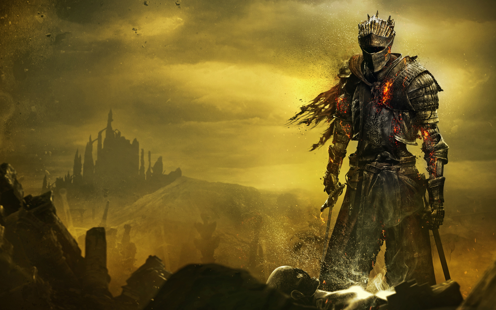
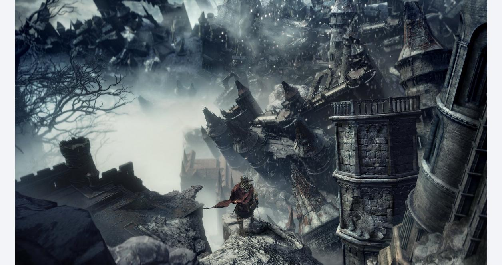
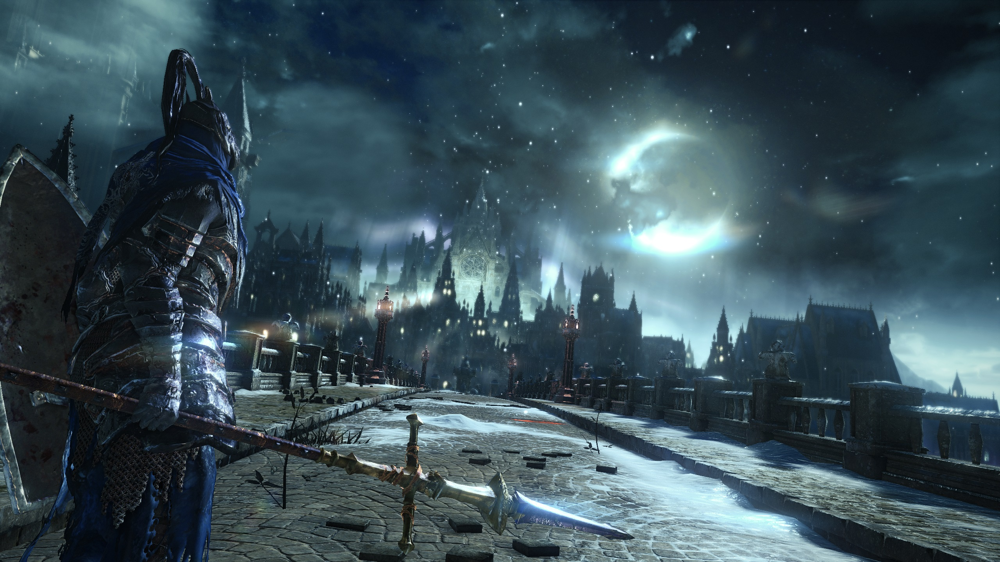
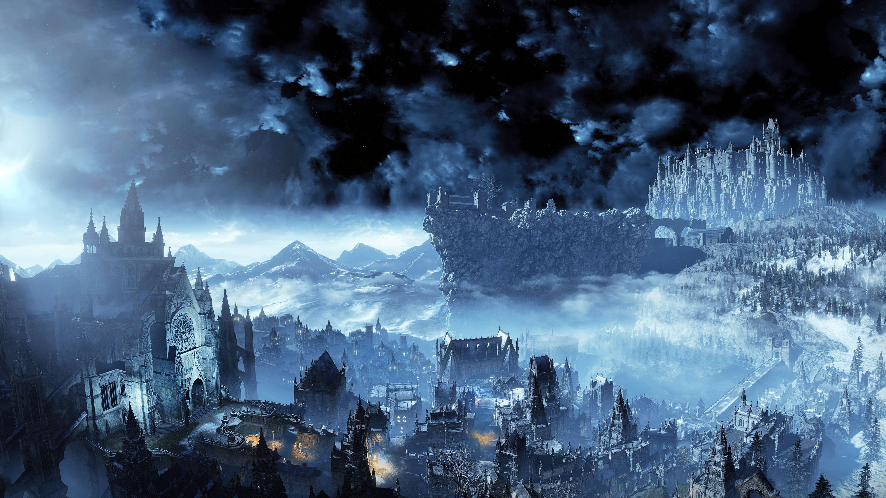
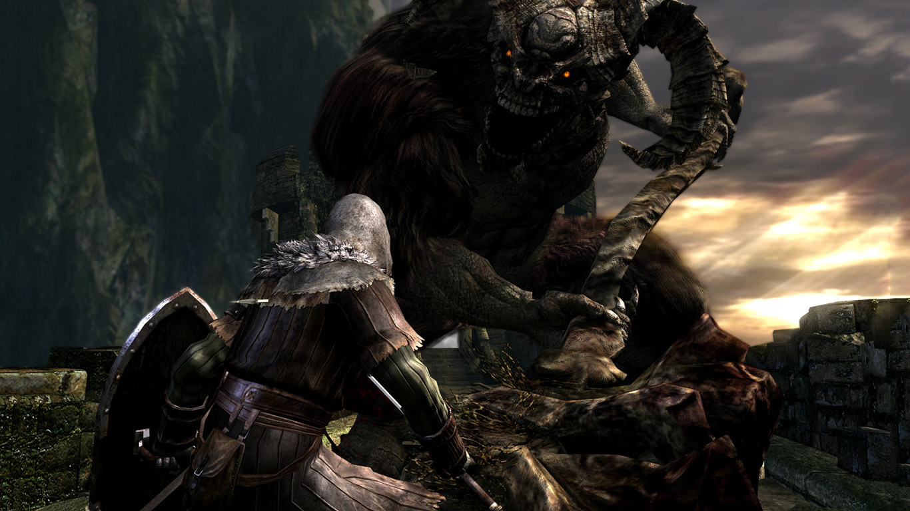
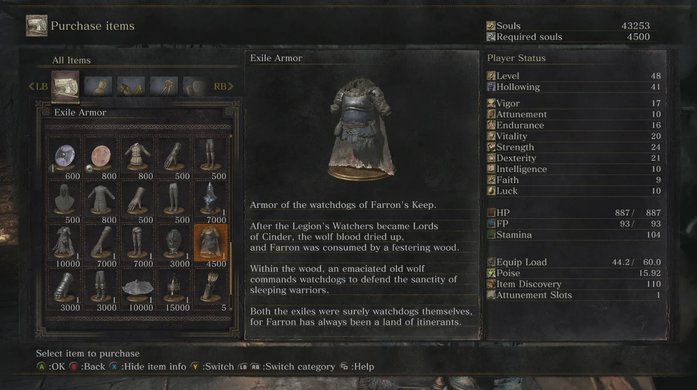
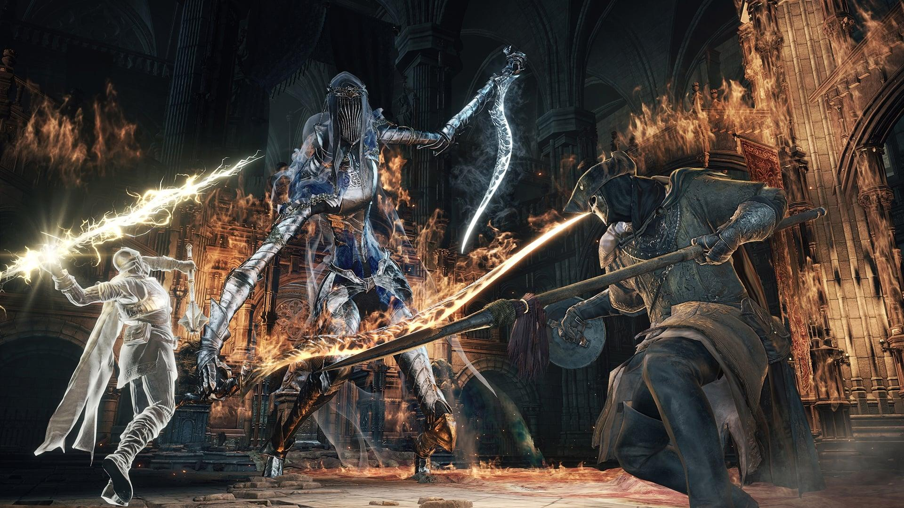
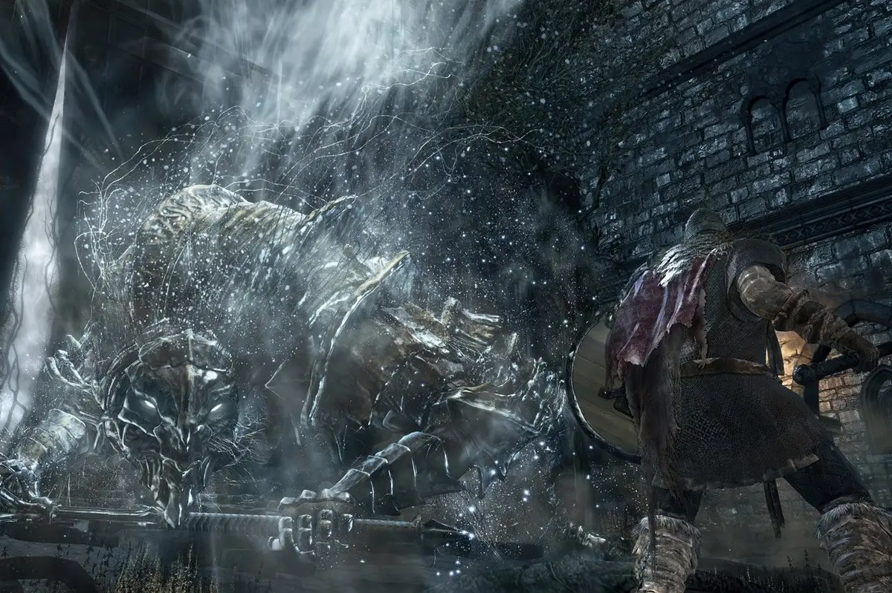
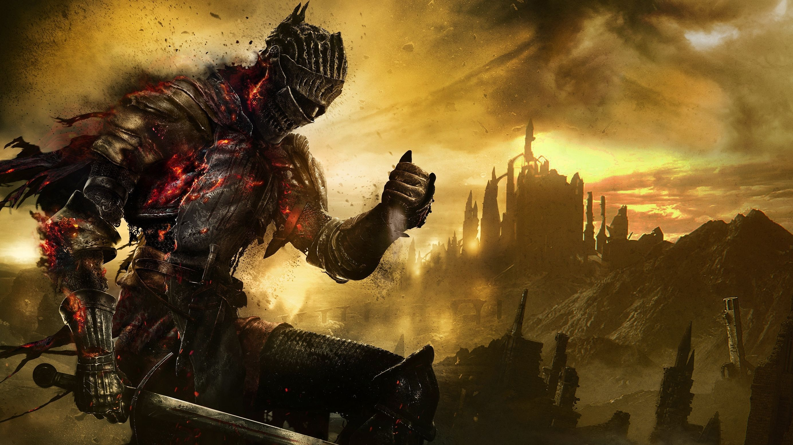

Dark Souls 3 – ĐĨA GAME PS4
680.000
VND
Bảo đảm 100% chính hãng
- 2004'S Store chỉ làm việc trực tiếp với các thương hiệu và nhà phân phối chính thức
- 2004'S Store kiểm soát chặt chẽ quy trình hàng hóa được chấp thuận pháp giao dịch, nhập khẩu và khai thuế
- Hỗ trợ mua máy trả góp lãi xuất 0% qua thẻ tín dụng, nhanh hơn, tiết kiệm hơn
Đĩa PS4 Dark Souls 3: The Fire Fades Edition – một cuộc hành trình mạnh mẽ
Nếu Dark Souls đầu tiên mô tả một thế giới đang trôi dạt về phía ngày tận thế một cách duyên dáng thì Đĩa PS4 Dark Souls 3: The Fire Fades Edition lại cho thấy một thế giới đang lao thẳng vào đó theo hình xoắn ốc, cuồng nhiệt. Đó là một con quái vật khổng lồ hung dữ và đầy trừng phạt, thách thức bạn tiến một bước trước khi đánh bật bạn, hết lần này đến lần khác.
Nhưng với một thế giới ảm đạm nhưng tươi đẹp đang say mê khám phá và chứa đầy những bí mật cần tìm, tôi luôn cảm thấy buộc phải quay lại, háo hức với cảm giác hồi hộp quen thuộc khi vượt qua ngay cả những thử thách khó khăn nhất.
Vương quốc Lothric và những vùng đất nằm ngoài kia chứa đựng một số địa điểm có hình ảnh ấn tượng nhất mà nhà phát triển From Software từng tạo ra. Mặc dù nhiều địa điểm của nó tái chế các ý tưởng từ các địa điểm quen thuộc (như Hầm mộ và một đầm lầy độc khác)
Nhưng chúng vẫn đủ nổi bật để cảm thấy khác biệt so với các trò chơi tương tự trong quá khứ. Chưa bao giờ người chơi không cảm thấy bị thu hút bởi cảm giác mạnh mẽ về vị trí và số lượng chi tiết tuyệt đẹp được đưa vào từng môi trường. Tôi kinh ngạc nhìn ra trên đỉnh thành trì thời Trung cổ đổ nát của Bức tường Cao, ngắm nhìn các thung lũng xung quanh và những ngọn núi phủ đầy tuyết.
Những cư dân điên cuồng của pháo đài biến thành đá và gỗ giữa lúc cầu nguyện. Người chơi lê bước qua những đầm lầy độc hại của Con đường Hy sinh trong khi chiến đấu với những con thú hung hãn, mang chéo, bất chấp sự lạnh giá của Irithyll, ngục tối giống như Tháp Latria và bị lạc trong mê cung nhiều tầng với những giá sách đầy lời nguyền trong Grand Archives.
Thế giới của Đĩa PS4 Dark Souls 3: The Fire Fades Edition
Mỗi cấp độ không chỉ chứa đầy những tuyệt tác kiến trúc ngoạn mục và những chi tiết trang trí môi trường tỉ mỉ nhất mà còn có rất nhiều việc phải làm và xem từng khoảnh khắc.Việc khám phá những địa điểm nói trên là nền tảng của loạt phim này và thế giới của Đĩa PS4 Dark Souls 3: The Fire Fades Edition đã làm được rất nhiều điều để khen thưởng bản chất tò mò và kỹ lưỡng.
Bạn có thể dành hàng giờ trong một khu vực, siêng năng điều tra mọi góc tối hoặc con đường phụ và liên tục được khen thưởng bằng một số tiết lộ câu chuyện thú vị, trang bị mới, trùm nhỏ và thậm chí toàn bộ khu vực bí mật. Những bức tường ảo tưởng quay trở lại một cách đắc thắng, khiến người chơi buộc phải chém bỏ những vết lõm hoặc viên gạch trông đáng ngờ để tìm kiếm trang bị quý giá.
Nguười chơi cũng nhận được tỷ lệ lợi nhuận khá cao khi làm điều đó, từ cấp độ đầu tiên cho đến cấp độ cuối trò chơi. Thằn lằn pha lê chắc hẳn cũng đã có một mùa sinh sản, bởi vì có hàng tấn chúng trườn khắp nơi, chín muồi để giết chóc và có rất nhiều titanite lấp lánh để nâng cấp vũ khí đặc biệt.
Thế giới của Đĩa PS4 Dark Souls 3: The Fire Fades Edition không được kết nối công khai như Dark Souls 1 (nơi bạn có thể tự do di chuyển giữa các khu vực cấp cao và cấp thấp), nhưng các khu vực riêng lẻ vẫn đan xen các đường phân nhánh của riêng chúng lại với nhau một cách liền mạch, tạo ra những mê cung xoắn ốc gồm các lối đi chồng chéo và những lối tắt khiến người chơi thấy thích thú.
Vũ Khí và Quái Vật
Quái Vật
Sự tàn bạo trong thế giới của Đĩa PS4 Dark Souls 3: The Fire Fades Edition và những con quái vật lang thang ở đó chỉ phù hợp với những chiêu thức mới độc ác được gọi là nghệ thuật sử dụng vũ khí, giúp tăng thêm sự đa dạng và phong cách cho một hệ thống chiến đấu vốn đã mạnh mẽ: một khoảnh khắc, người chơi sẽ nghiền nát kẻ thù bằng sức nặng khủng khiếp của cơ thể mình. đại kiếm, tiếp theo người chơi sẽ biến khối thép cong khổng lồ thành một cánh quạt hủy diệt duyên dáng.
Một số kỹ năng nhất định khác, chẳng hạn như ngọn giáo sét cho phép bạn tấn công kẻ thù bằng một vụ nổ điện, cho phép bạn hoàn thành bước di chuyển mà không bị sát thương nguyên tố cho đến khi bạn hồi phục được FP, vì vậy việc hết FP không nhất thiết là khẩn cấp hoặc khiến bạn mất tâm trạng.
Nó trở nên quan trọng hơn nhiều khi bạn là người sử dụng phép thuật, bởi vì số lượng phép thuật bạn có phụ thuộc vào FP, nhưng hệ thống thực sự hào phóng hơn mức giới hạn. Đó là nhờ một vật phẩm mới có thể tái sử dụng tên là Ashen Estus.
Vũ Khí
Một số nghệ thuật vũ khí có vẻ ngoài tuyệt vời nhất và một trong những bước tiến ấn tượng nhất trong cuộc chiến của Dark Souls 3 nói chung, xuất phát từ bộ vũ khí sử dụng kép của nó. Một hệ thống rõ ràng cho hầu hết các tổ hợp vũ khí sử dụng kép và một kho vũ khí tuyệt vời được thiết kế dành riêng cho nó có nghĩa là giờ đây việc xây dựng một hệ thống sử dụng hai vũ khí trong Đĩa PS4 Dark Souls 3: The Fire Fades Edition thực sự khả thi.
Nguy cơ không có khiên luôn là một phần lý do khiến việc sử dụng vũ khí kép trở nên hấp dẫn và một số vũ khí của Đĩa PS4 Dark Souls 3: The Fire Fades Edition đủ mạnh mẽ và đa năng để khiến bạn thậm chí không bỏ lỡ nó.

Nghệ thuật sử dụng vũ khí cũng làm cho việc sử dụng khiên trở nên thú vị hơn bằng cách tạo cho chúng sự đa dạng hơn. Một số khiên thiếu khả năng đỡ đòn, thay vào đó, sử dụng lệnh tương tự để nhanh chóng thực hiện kỹ năng của vũ khí bên phải của bạn mà không cần phải dùng hai tay theo cách thủ công
Một số khiên cũng có khả năng tấn công phá khiên – vâng, điều này có nghĩa là bạn có thể sử dụng hai khiên lớn. Trên thực tế, bạn có thể sử dụng kép bất kỳ sự kết hợp vũ khí nào với bộ di chuyển hoàn toàn thuận tay phải và tay trái, điều này khiến cơ hội cho những cách chế tạo tuyệt vời và kỳ quái dường như gần như vô tận
Đó là chưa kể vũ khí của trùm, đi kèm với các kỹ năng vũ khí độc đáo, kết hợp với bộ sưu tập áo giáp mới và cũ tuyệt vời của Đĩa PS4 Dark Souls 3: The Fire Fades Edition, cho phép bạn không chỉ trông giống các nhân vật và trùm yêu thích của mình mà còn thực hiện các đòn tấn công đặc trưng của họ.
Mỗi Lần Đánh Boss Là Một Lần Thú Vị
Trong khi hầu hết các trận đánh trùm đều là các trận chém, khiên và cuộn truyền thống theo phong cách Dark Souls, một số tên trùm có những điểm yếu được bố trí hợp lý cần phải nhắm mục tiêu để gây sát thương hoặc cần khó hiểu hơn một chút để hạ gục.
Cách tiếp cận mang tính thử nghiệm không thường xuyên này đối với các con trùm luôn có ý tưởng thú vị, nhưng thường không dẫn đến những cuộc chiến không mấy hấp dẫn hoặc phản cảm. Hạ gục một tên khổng lồ to lớn trong bốn đòn là một sự lãng phí cho một thiết kế trùm tuyệt vời, ngay cả khi phương pháp này khá thú vị – và một khi bạn biết cách thực hiện, tên trùm đó sẽ không bao giờ thực sự đe dọa nữa.
Tuy nhiên, không phải Đĩa PS4 Dark Souls 3: The Fire Fades Edition thiếu những thiết kế trùm tuyệt vời – từ hùng vĩ đến đáng sợ, một số thậm chí còn khiến tôi phải há hốc mồm vì sốc trước ý nghĩa truyền thuyết về vẻ ngoài, âm nhạc hoặc hoàn cảnh của chúng, và hầu hết đều có một trận chiến thú vị và khó khăn để phù hợp.
Dark Souls 3: The Fire Fades Edition – Có Phải Là Phần Cuối ?
Nếu Đĩa PS4 Dark Souls 3: The Fire Fades Edition thực sự là phần cuối cùng trong loạt phim như chúng ta đã biết, thì đó là một sự chia tay xứng đáng. Nghệ thuật vũ khí cho phép những bước di chuyển mới đầy phong cách và linh hoạt mà không làm hoen ố sự thuần khiết của hệ thống chiến đấu.
Các địa điểm đầy cảm hứng của Lothric cung cấp các đấu trường trực quan tuyệt đẹp để khám phá nghiêm ngặt và đối đầu khốc liệt với hàng loạt kẻ thù nguy hiểm và thậm chí cả những tên trùm nguy hiểm hơn. Mặc dù không phải tất cả những thay đổi đầy rủi ro đều diễn ra gọn gàng như những phần khác, nhưng Dark Souls 3 là một cuộc hành trình mạnh mẽ và là phần tiếp theo mà loạt phim thực sự xứng đáng